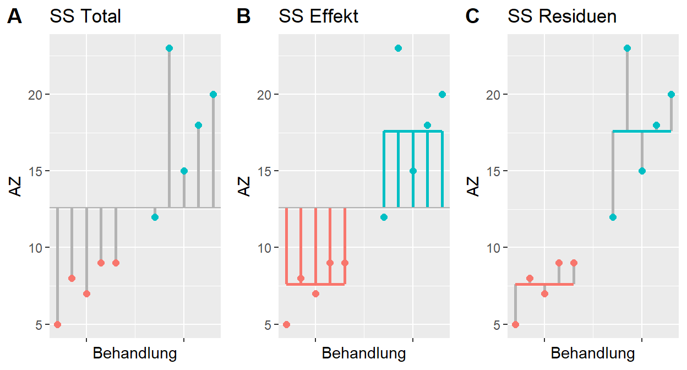
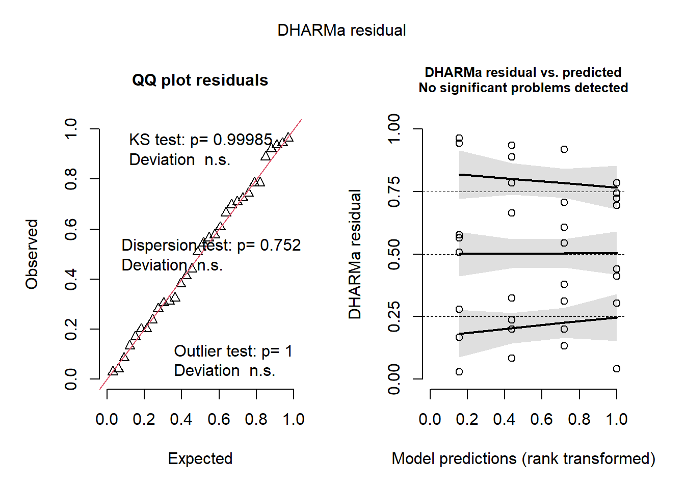
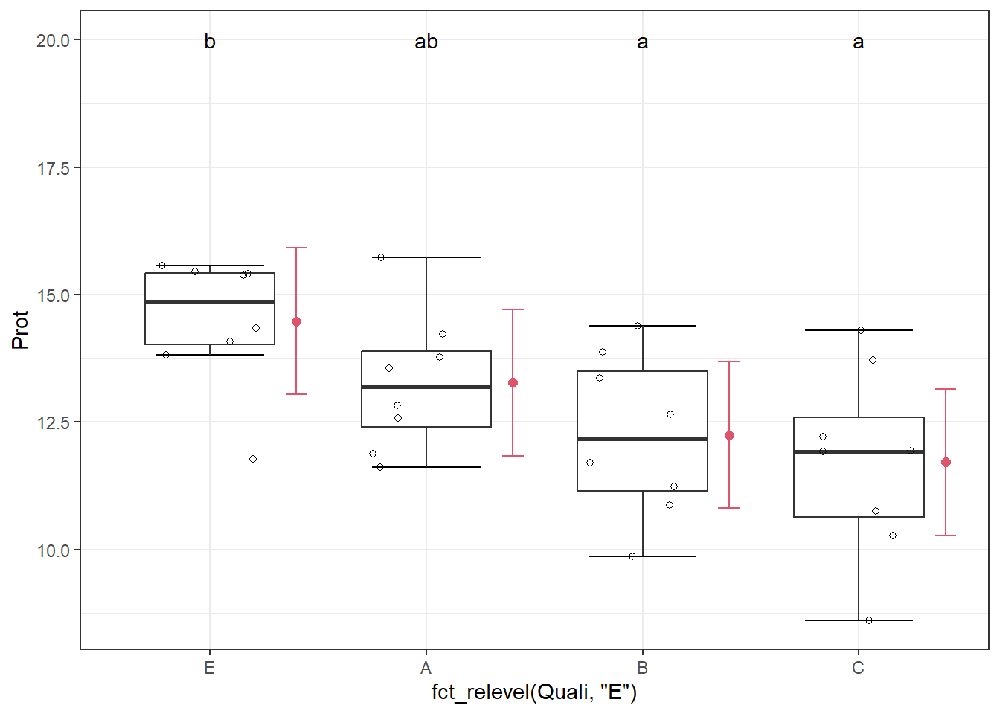
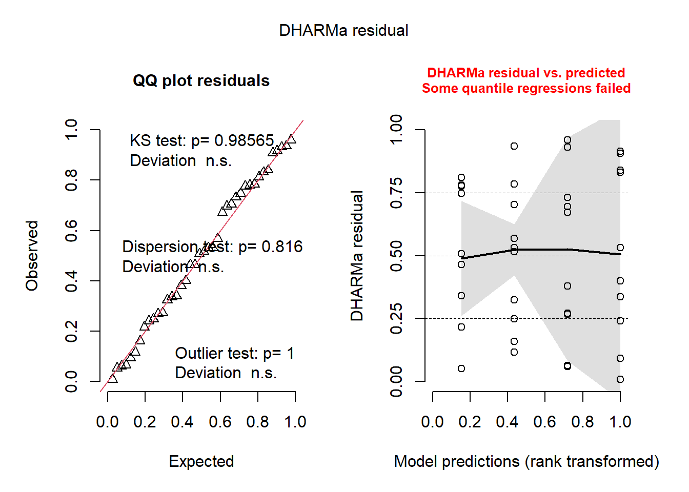

library(dplyr)
library(ggplot2)
library(gridExtra)
library(ggpubr)
library(ggfortify)ANOVA
Unterscheiden sich die Gruppen?
| Experiment | Behandlung | MW | SD | N |
|---|---|---|---|---|
| Exp 1 | A | 10 | 2.0 | 1000 |
| Exp 1 | B | 20 | 2.0 | 1000 |
| Exp 2 | A | 10 | 4.8 | 1000 |
| Exp 2 | B | 20 | 4.8 | 1000 |
| Exp 3 | A | 10 | 5.1 | 1000 |
| Exp 3 | B | 30 | 5.0 | 1000 |
Beispieldaten ANOVA in Anlehnung an Carsten Dormann “Parametrische Statistik” S. 191ff

- Gesamtvarianz der Daten = Abweichungsquadrate zum Gesamtmittelwert = SS Total
- Abweichungsquadrate der Gruppen zum Gesamtmittelwert = SS Effekt
- Abweichungsquadrate zum Mittelwert der beiden Gruppen = SS Residuen
SSTotal = SSEffekt + SSResiduen
F-Wert = (SSEffekt/dfEffekt)/(SSResiduen/dfResiduen)
dfEffekt = k-1, wobei k die Anzahl der Gruppen (Faktorlevels) ist
dfResiduen = n-k, wobei n der Stichprobenumfang ist
F-Wert = MSEffekt/MSResiduen
aus dem F-Wert und den degrees of freedom resultiert dann der p-Wert
R² = SSEffekt/SSTotal * 100
entsprechend können signifikante Unterschiede verschiedene Ursachen haben:
- große Mittelwertsdifferenzen zwischen den Gruppen (hohe SSEffekt)
- geringe Variabilität innerhalb der Gruppen (niedrige SSResiduen)
- hoher Stichprobenumfang bzw. Anzahl Wiederholungen je Gruppe (erhöht dfResiduen und senkt damit MSResiduen)
Varianzanalyse (Analysis of Variance)
mod<-aov(Abhängige ~ Erklärungsvariable, data=md)- Abhängige ist kontinuierlich
- Erklärungsvariable ist ein Faktor
Voraussetzungen:
- zufällige Stichprobennahme (unabhängige Fehler)
- Varianzhomogenität/Homoskedastizität
- annähernde Normalverteilung der Fehler (Residuen), und nicht der Abhängigen!
Beispiel ANOVA Proteingehalt
Die Proteingehalte von jeweils 8 zufällig ausgewählten Weizenproben der 4 Qualitätsklassen E, A, B und C wurden ermittelt. Unterscheiden sich die Qualitätsklassen im Proteingehalt?
Daten einlesen, kennenlernen und plotten
library(openxlsx)
md<-read.xlsx("Protein.xlsx")Struktur der eingelesenen Daten überprüfen
str(md)'data.frame': 32 obs. of 3 variables:
$ ID : num 1 2 3 4 5 6 7 8 9 10 ...
$ Quali: chr "E" "E" "E" "E" ...
$ Prot : num 15.4 15.6 14.3 13.8 15.4 ...unique(md$Quali)[1] "E" "A" "B" "C"md$Quali=as.factor(md$Quali)# Erklärungsvariable muss als Faktor deklariert sein
levels(md$Quali)[1] "A" "B" "C" "E"Daten plotten (Ausreißer, Eingabefehler, Varianzhomogenität visuell überprüfen)
ggplot(md, aes(x=Quali, y=Prot)) +
stat_boxplot(geom ="errorbar", width = 0.5)+
geom_boxplot(outlier.shape=NA) +
geom_jitter(width=0.25, height=0, shape=1)+
stat_summary(fun = "mean", colour = "red", size = 2, geom = "point") Modell formulieren
Wichtig ist, dass die Abhängige kontinuierlich und die Erklärungsvariable ein Faktor ist.
mod<-lm(Prot ~ Quali, data=md) # Prot ist die Abhängige, Quali die Erklärungsvariable
anova(mod)Analysis of Variance Table
Response: Prot
Df Sum Sq Mean Sq F value Pr(>F)
Quali 3 35.666 11.8888 5.0814 0.006198 **
Residuals 28 65.511 2.3397
---
Signif. codes: 0 '***' 0.001 '**' 0.01 '*' 0.05 '.' 0.1 ' ' 1Quali hat einen signifikanten Effekt auf den Proteingehalt.
Modellinterpretation
summary(mod)
Call:
lm(formula = Prot ~ Quali, data = md)
Residuals:
Min 1Q Median 3Q Max
-3.1099 -0.9705 0.2110 0.9566 2.5819
Coefficients:
Estimate Std. Error t value Pr(>|t|)
(Intercept) 13.2728 0.5408 24.543 <2e-16 ***
QualiB -1.0279 0.7648 -1.344 0.190
QualiC -1.5594 0.7648 -2.039 0.051 .
QualiE 1.2036 0.7648 1.574 0.127
---
Signif. codes: 0 '***' 0.001 '**' 0.01 '*' 0.05 '.' 0.1 ' ' 1
Residual standard error: 1.53 on 28 degrees of freedom
Multiple R-squared: 0.3525, Adjusted R-squared: 0.2831
F-statistic: 5.081 on 3 and 28 DF, p-value: 0.006198- R² ist 35.3 %. Adjusted R² ist 28.3 %.
- Hinter dem Intercept verbirgt sich das erste Level von
Quali, i.e.A.Ahat demnach einen geschätzten mittleren Proteingehalt von 13.3. - Um den geschätzten mittleren Proteingehalt für
Bzu ermitteln, müssen wir Intercept + EstimateQualiBrechnen, d.h. 13.3 -1 = 12.2 - Um den geschätzten mittleren Proteingehalt für
Czu ermitteln, müssen wir Intercept + EstimateQualiCrechnen, d.h. 13.3 -1.6 = 11.7 - und für
EIntercept + EstimateQualiE: 13.3 + 1.2 = 14.5
alternative Funktion aov
… gelangt zu den gleichen Ergebnissen und wird hier lediglich der Vollständigkeit halber erwähnt.
mod.a<-aov(Prot ~ Quali, data=md) #
summary(mod.a) Df Sum Sq Mean Sq F value Pr(>F)
Quali 3 35.67 11.89 5.081 0.0062 **
Residuals 28 65.51 2.34
---
Signif. codes: 0 '***' 0.001 '**' 0.01 '*' 0.05 '.' 0.1 ' ' 1summary.lm(mod.a)
Call:
aov(formula = Prot ~ Quali, data = md)
Residuals:
Min 1Q Median 3Q Max
-3.1099 -0.9705 0.2110 0.9566 2.5819
Coefficients:
Estimate Std. Error t value Pr(>|t|)
(Intercept) 13.2728 0.5408 24.543 <2e-16 ***
QualiB -1.0279 0.7648 -1.344 0.190
QualiC -1.5594 0.7648 -2.039 0.051 .
QualiE 1.2036 0.7648 1.574 0.127
---
Signif. codes: 0 '***' 0.001 '**' 0.01 '*' 0.05 '.' 0.1 ' ' 1
Residual standard error: 1.53 on 28 degrees of freedom
Multiple R-squared: 0.3525, Adjusted R-squared: 0.2831
F-statistic: 5.081 on 3 and 28 DF, p-value: 0.006198Modelldiagnostik
Wir überprüfen die Annahmen der ANOVA visuell auf:
- annähernde Normalverteilung der Fehler (i.e. Residuen)
- Varianzhomogenität
Ich nutze hierfür die library(DHARMa).
https://cran.r-project.org/web/packages/DHARMa/vignettes/DHARMa.html
library(DHARMa)
simulationOutput <- simulateResiduals(fittedModel = mod, plot = F)
plot(simulationOutput)
Die erste Grafik zeigt einen QQ-Plot der standardisierten
Residuen, der uns Informationen über die Normalverteilung der Residuen liefert. Wenn die Punkte ungefähr entlang der Winkelhalbierenden (rote Linie) liegen, deutet dies darauf hin, dass die Residuen approximativ normalverteilt sind. Außerdem werden uns p-Werte für den KS-Test (Kolmogorov-Smirnov-Test auf Normalverteilung), ein Dispersion- und Ausreißertest angezeigt.Die zweite Grafik plottet die
Residuengegen dieFitted Values. Wir wollen hier sehen, dass die Streuung um die 0.5 sowohl bei hohen als auch bei niedrigen Werten in etwa gleich ist (Varianzhomogenität). Hier scheint ein leichter Trend vorzuliegen (ist aber m.E. noch ok). Der Plot ist auch hilfreich zum Identifizieren von auffälligen Stichproben. Diese werden als rote Sternchen abgebildet (müssen aber noch nicht zwingend als Ausreißer bezeichnet werden).Um die Varianzhomogenität zwischen den Gruppen zu prüfen, sollten wir die Residuen gegen die Erklärungsvariablen plotten.
plotResiduals(simulationOutput, form = md$Quali)Solange alle Tests nicht signifikant sind (und keine roten Linien oder Boxen angezeigt werden), ist alles (mehr oder weniger) gut. ABER es sei angemerkt, dass die Teststärke (Power) der Tests von der Anzahl der Beobachtungen abhängt. Je mehr Beobachtungen wir haben, umso höher ist die Power des Tests. Damit werden häufig signifikante Unterschiede z.B. der Varianzen bei großem Stichprobenumfang beobachtet, obwohl diese praktisch nicht relevant sind. Außerdem werden häufig keine signifikanten Unterschiede bei kleinem Stichprobenumfang beobachtet, obwohl gravierende Unterschiede vorhanden sind.
Die visuelle Modelldiagnostik wird daher häufig als wichtiger angesehen als die p-Wert-basierten Tests auf Normalverteilung und Varianzhomogenität (Cochran, Bartlett und Levenes Test).
#Tests zur Varianzhomogenität
var.test(md$Prot[md$Quali=="E"], md$Prot[md$Quali=="B"] )
F test to compare two variances
data: md$Prot[md$Quali == "E"] and md$Prot[md$Quali == "B"]
F = 0.6686, num df = 7, denom df = 7, p-value = 0.6085
alternative hypothesis: true ratio of variances is not equal to 1
95 percent confidence interval:
0.1338567 3.3396057
sample estimates:
ratio of variances
0.6686019 bartlett.test(Prot ~ Quali, data=md)
Bartlett test of homogeneity of variances
data: Prot by Quali
Bartlett's K-squared = 1.0564, df = 3, p-value = 0.7876library(car)
leveneTest(Prot ~ Quali, data=md) Levene's Test for Homogeneity of Variance (center = median)
Df F value Pr(>F)
group 3 0.3349 0.8002
28 library(outliers)
cochran.test(Prot ~ Quali, data=md)
Cochran test for outlying variance
data: Prot ~ Quali
C = 0.36079, df = 8, k = 4, p-value = 0.6601
alternative hypothesis: Group C has outlying variance
sample estimates:
A B C E
1.805174 2.503336 3.376528 1.673735 In unserem Beispiel ist alles ok. Sowohl visuell als auch nach Aussage der Tests.
Hier ein Beispiel für Varianzheterogenität mit veränderten Daten.
md$Prot2= md$Prot
set.seed(1309)
md$Prot2[md$Quali=="E"] =rnorm(8, 14.5, 13)
ggplot(md, aes(x=Quali, y=Prot2)) +
stat_boxplot(geom ="errorbar", width = 0.5)+
geom_boxplot(outlier.shape=NA) +
geom_jitter(width=0.25, height=0, shape=1)+
stat_summary(fun = "mean", colour = "red", size = 2, geom = "point") mod2<-lm(Prot2 ~ Quali, data=md)
simulationOutput <- simulateResiduals(fittedModel = mod2, plot = F)
plot(simulationOutput)plotResiduals(simulationOutput, form = md$Quali)Die Residuen weisen eine größere Streuung mit größer werdenden fitted values auf bzw. unterscheiden sich die Varianzen der Gruppen. Um dem entgegenzuwirken, könnten wir entweder die Analyse mit transformierten Daten vornehmen oder besser einen Funktion anwenden, die die unterschiedliche Varianz in den Gruppen berücksichtigt. Letzteres ist mit den Funktionen glmmTMB() und lme möglich.
Post-hoc Test
Die ANOVA hat einen signifikanten Effekt von Quali auf Prot gezeigt. Allerdings wissen wir nicht, welche Weizenqualitätsklassen sich voneinander unterscheiden. Bei Faktoren mit mehr als zwei Ausprägungen wird daher ein Post-hoc Test durchgeführt. Dieser korrigiert die Irrtumswahrscheinlichkeit um die Anzahl der Vergleiche, da bei beispielsweise 100 Ausprägungen schon rein zufällig fünf signifikante Unterschiede auftreten können.
Bespiel für multiples Testen ohne und mit Adjustierung des p-Wertes
pairwise.t.test(md$Prot, md$Quali, p.adj = "none") # p-Werte werden nicht korrigiert, nicht gut!
Pairwise comparisons using t tests with pooled SD
data: md$Prot and md$Quali
A B C
B 0.1897 - -
C 0.0510 0.4928 -
E 0.1268 0.0069 0.0012
P value adjustment method: none # Bonferroni-Korrektur (Bonferroni multipliziert p mit der Anzahl Tests, sehr konservativ)
pairwise.t.test(md$Prot, md$Quali, p.adj = "bonferroni") # besser
Pairwise comparisons using t tests with pooled SD
data: md$Prot and md$Quali
A B C
B 1.000 - -
C 0.306 1.000 -
E 0.761 0.041 0.007
P value adjustment method: bonferroni Post-hoc Test: package emmeans
Die library(emmeans) mit der Funktion emmeans() bietet eine Vielzahl an Möglichkeiten um einen Post-hoc Test am gefitteten Modell (hier die ANOVA) durchzuführen. Mit dem Argument method="pairwise" kann man alle Behandlungen miteinander per Tukey-Test vergleichen, i.e. paarweise.
library(emmeans)
contrast(emmeans(mod, ~Quali), method="pairwise") contrast estimate SE df t.ratio p.value
A - B 1.028 0.765 28 1.344 0.5437
A - C 1.559 0.765 28 2.039 0.1982
A - E -1.204 0.765 28 -1.574 0.4093
B - C 0.532 0.765 28 0.695 0.8981
B - E -2.231 0.765 28 -2.918 0.0328
C - E -2.763 0.765 28 -3.613 0.0061
P value adjustment: tukey method for comparing a family of 4 estimates Mit method="trt.vs.ctrl" wird ein Dunnett-Test durchgeführt, der alle Behandlungen gegen eine Kontrolle testet. Die p-Werte werden automatisch um die Anzahl der Tests korrigiert.
contrast(emmeans(mod, ~Quali), method="trt.vs.ctrl") contrast estimate SE df t.ratio p.value
B - A -1.03 0.765 28 -1.344 0.4116
C - A -1.56 0.765 28 -2.039 0.1295
E - A 1.20 0.765 28 1.574 0.2937
P value adjustment: dunnettx method for 3 tests Hier wird immer gegen die Qualität A geprüft, weil diese das erste Level der Variable Quali ist.
Mit dem Argument ref kann ich ein anderes Level wählen. Hier die E-Qualität.
contrast(emmeans(mod, ~Quali), method="trt.vs.ctrl", ref=4) contrast estimate SE df t.ratio p.value
A - E -1.20 0.765 28 -1.574 0.2937
B - E -2.23 0.765 28 -2.918 0.0190
C - E -2.76 0.765 28 -3.613 0.0033
P value adjustment: dunnettx method for 3 tests Alternativ kann ich bereits im data.frame die Faktorenlevels entsprechend meiner Interpretation ändern und damit das Modell anpassen. (siehe dazu Reihenfolge ändern in Kap. Grafik)
Interessant sind auch die Konfidenzintervalle. Wenn Konfidenzintervalle sich nicht überlappen, geht man in der Regel von signifikanten Unterschieden aus. Es kann auch sein, dass Konfidenzintervalle leicht überlappen, und trotzdem signifikante Unterschiede vorliegen. https://core.ac.uk/download/pdf/82702323.pdf Hier sollte man immer auf die p-Werte des Tests schauen.
summary(emmeans(mod, ~Quali)) #Konfidenzintervalle Quali emmean SE df lower.CL upper.CL
A 13.3 0.541 28 12.2 14.4
B 12.2 0.541 28 11.1 13.4
C 11.7 0.541 28 10.6 12.8
E 14.5 0.541 28 13.4 15.6
Confidence level used: 0.95 plot(emmeans(mod, ~Quali))Um Gruppenunterschiede leicht verständlich anzugeben bzw. zu visualisieren, kann das compact letter display genutzt werden. Hierfür benötigen wir die library(multcompView) und library(multcomp).
library(multcompView)
library(multcomp)
cld(emmeans(mod, ~Quali), adjust="sidak", Letters=letters) # Compact letter display für Gruppenunterschiede Quali emmean SE df lower.CL upper.CL .group
C 11.7 0.541 28 10.3 13.2 a
B 12.2 0.541 28 10.8 13.7 a
A 13.3 0.541 28 11.8 14.7 ab
E 14.5 0.541 28 13.0 15.9 b
Confidence level used: 0.95
Conf-level adjustment: sidak method for 4 estimates
P value adjustment: sidak method for 6 tests
significance level used: alpha = 0.05
NOTE: If two or more means share the same grouping symbol,
then we cannot show them to be different.
But we also did not show them to be the same. Gruppen, die keinen Buchstaben gemeinsam haben, sind im Mittelwert signifikant unterschiedlich. Qualitätsklasse E hat einen signifikant höheren Proteingehalt im Vergleich zu B und C, während E und A sich nicht signifikant unterscheiden.
Präsentation der Ergebnisse
So könnte man die Daten und die Ergebnisse des Modells präsentieren. Ich speichere das Konfidenzintervall als Objekt CI und plotte es dann in den jittered Boxplot. Das Einzeichnen der Buchstaben muss nicht sein. Der Vollständigkeit halber soll es hier aber gezeigt werden.
CIs=cld(emmeans(mod, ~Quali), adjust="sidak", sort = FALSE, Letters=letters)
CIs$.group # hier sind noch Leerzeichen enthalten, die die Zentrierung der Buchstaben erschwert[1] " ab" " a " " a " " b"CIs$.group =gsub(" ", "", CIs$.group, fixed = TRUE)# entfernen der Leerzeichen
CIs$.group # besser[1] "ab" "a" "a" "b" str(CIs)Classes 'summary_emm' and 'data.frame': 4 obs. of 7 variables:
$ Quali : Factor w/ 4 levels "A","B","C","E": 1 2 3 4
$ emmean : num 13.3 12.2 11.7 14.5
$ SE : num 0.541 0.541 0.541 0.541
$ df : num 28 28 28 28
$ lower.CL: num 11.8 10.8 10.3 13
$ upper.CL: num 14.7 13.7 13.2 15.9
$ .group : chr "ab" "a" "a" "b"
- attr(*, "estName")= chr "emmean"
- attr(*, "clNames")= chr [1:2] "lower.CL" "upper.CL"
- attr(*, "pri.vars")= chr "Quali"
- attr(*, "adjust")= chr "sidak"
- attr(*, "side")= num 0
- attr(*, "delta")= num 0
- attr(*, "type")= chr "link"
- attr(*, "mesg")= chr [1:5] "Confidence level used: 0.95" "Conf-level adjustment: sidak method for 4 estimates" "P value adjustment: sidak method for 6 tests" "significance level used: alpha = 0.05" ...ggplot(md, aes(x=Quali, y=Prot)) +
stat_boxplot(geom ="errorbar", width = 0.5)+
geom_boxplot(outlier.shape=NA, width = 0.6) +
geom_jitter(width=0.25, height=0, shape=1)+
geom_point(data=CIs, aes(y=emmean),
shape=16, size=2, col=2,
position = position_nudge(x = 0.4))+
geom_errorbar(data=CIs, aes(y=emmean, ymin=lower.CL, ymax=upper.CL),
width=0.1, col=2, position = position_nudge(x = 0.4))+
geom_text(data=CIs, aes(y = 17, label =.group))+
scale_y_continuous(labels=scales::number_format(accuracy = 0.01,
decimal.mark =","))+
theme_bw() +
ylab("Proteingehalt %")+
xlab("Qualitätsklasse")
Im Text sollte man erwähnen, dass
Qualieinen signifikanten Einfluss aufProthat. Nutze die Funktionanova(mod)und gibt den p-Wert zusammen mit dendegrees of freedomundF-Wertan.- der Post-hoc Test gezeigt hat, dass
Emit im Mittel 14.5 % einen signifikant höheren Proteingehalt hatte alsBundCmit 12.2 % und 11.7 % , währendEundAsich nicht unterscheiden. Die Proteingehalte vonA,BundCunterscheiden sich nicht signifikant (p>0.05). Hierzu nutzt du die Funktioncontrast(emmeans(mod, c("Quali")), method="pairwise"). - das R² des Modells 35.3 beträgt.
summary(mod)$r.sq - die Modellannahmen für die ANOVA (Varianzhomogenität und annähernde Normalverteilung der Residuen) visuell mit dem Paket
DHARMaüberprüft wurden.
add on: Faktorlevels in Grafik umsortieren
Schöner wäre es, die Qualitäten in absteigender Reihenfolge darzustellen. E steht für Elite und ist die beste Qualität.
library(forcats)
md %>%
ggplot(aes(x=fct_relevel(Quali, "E"), y=Prot)) +
stat_boxplot(geom ="errorbar", width = 0.5)+
geom_boxplot(outlier.shape=NA, width = 0.6) +
geom_jitter(width=0.25, height=0, shape=1)+
geom_point(data=CIs, aes(y=emmean),
shape=16, size=2, col=2,
position = position_nudge(x = 0.4))+
geom_errorbar(data=CIs, aes(y=emmean, ymin=lower.CL, ymax=upper.CL),
width=0.1, col=2, position = position_nudge(x = 0.4))+
geom_text(data=CIs, aes(y = 20, label =.group))+
theme_bw()oder in aufsteigender Reihenfolge, basierend auf den Messwerten.
CIs$Prot=CIs$emmean
md %>%
ggplot(aes(x=fct_reorder(Quali, Prot), y=Prot)) +
stat_boxplot(geom ="errorbar", width = 0.5)+
geom_boxplot(outlier.shape=NA, width = 0.6) +
geom_jitter(width=0.25, height=0, shape=1)+
geom_point(data=CIs, aes(y=emmean),
shape=16, size=2, col=2,
position = position_nudge(x = 0.4))+
geom_errorbar(data=CIs, aes(y=emmean, ymin=lower.CL, ymax=upper.CL),
width=0.1, col=2, position = position_nudge(x = 0.4))+
geom_text(data=CIs, aes(y = 20, label =.group))+
theme_bw() Übung 4
In einem Gefäßversuch wurde die pflanzenliche Biomasse (BM) in den 4 Düngemittelvarianten (DM: Kontrolle, Düngemittel A, B und C) an jeweils 10 Proben gemessen.
- Importiere bitte die Daten Gefaessversuch.xlsx in R und mach Dich mit dem Datensatz vertraut.
Daten einlesen und prüfen
library(openxlsx)
g<-read.xlsx("Gefaessversuch.xlsx")
str(g)'data.frame': 40 obs. of 3 variables:
$ ID: num 1 2 3 4 5 6 7 8 9 10 ...
$ DM: chr "K" "K" "K" "K" ...
$ BM: num 118.3 122.4 96.7 86.9 119 ...ggplot(g, aes(x=DM, y=BM)) +
stat_boxplot(geom ="errorbar", width = 0.5)+
geom_boxplot(outlier.shape=NA) +
geom_jitter(width=0.25, height=0, shape=1)+
stat_summary(fun = "mean", colour = "red", size = 2, geom = "point") wir können die Kontrolle als erstes Level definieren.
g$DM=fct_relevel(g$DM, "K")
ggplot(g, aes(x=DM, y=BM)) +
stat_boxplot(geom ="errorbar", width = 0.5)+
geom_boxplot(outlier.shape=NA) +
geom_jitter(width=0.25, height=0, shape=1)+
stat_summary(fun = "mean", colour = "red", size = 2, geom = "point") - Unterscheidet sich die Biomasse zwischen den Varianten?
Modell formulieren
mod<-lm(BM ~ DM, data=g)
anova(mod)Analysis of Variance Table
Response: BM
Df Sum Sq Mean Sq F value Pr(>F)
DM 3 431421 143807 67.744 7.084e-15 ***
Residuals 36 76421 2123
---
Signif. codes: 0 '***' 0.001 '**' 0.01 '*' 0.05 '.' 0.1 ' ' 1Ja, aber bevor wir das Modell interpretieren, müssen wir uns unbedingt die Residuen anschauen.
- Sind die Voraussetzung für eine ANOVA gegeben? Prüfe die Residuen.
Modelldiagnostik
library(DHARMa)
simulationOutput <- simulateResiduals(fittedModel = mod, plot = F)
plot(simulationOutput)Warning in newton(lsp = lsp, X = G$X, y = G$y, Eb = G$Eb, UrS = G$UrS, L = G$L,
: Anpassung beendet mit Schrittweitenfehler - Ergebnisse sorgfältig prüfenplotResiduals(simulationOutput, form = g$DM)
Nein, das sieht nicht gut aus. Die Varianz wird mit jedem Level etwas größer. Hier könnte man nun die Abhängige Variable transformieren, um die Varianz zu stabilisieren.
Plotten wir die Daten mit einer Wurzel-transformierten Y-Achse:
ggplot(g, aes(x=DM, y=BM)) +
stat_boxplot(geom ="errorbar", width = 0.5)+
geom_boxplot(outlier.shape=NA) +
geom_jitter(width=0.25, height=0, shape=1)+
stat_summary(fun = "mean", colour = "red", size = 2, geom = "point") +
scale_y_sqrt()
Das sieht besser aus. Die Boxen der Boxplots weisen eine ähnliche Höhe auf.
Nun können wir entweder
- eine neue Variable in unseren
data.framedefinieren, die die wurzel-transformierten Werte enthält, z.B.g$BM.sq=sqrt(g$BM) - und mit dieser Variable das Modell fitten
mod<-lm(BM.sq ~ DM, data=g) - und später die emmeans und CIs zurücktransformieren
CIs$emmean.2=CIs$emmean^2(gleiches für die Konfidenzintervalle)
oder
- die Transformation im Modell definieren. Das hat bei der späteren Nutzung von
emmeans()den Vorteil, dass die Werte auf die Response Skala automatisch tranformiert werden können.
mod1<-lm(sqrt(BM) ~ DM, data=g)
anova(mod1)Analysis of Variance Table
Response: sqrt(BM)
Df Sum Sq Mean Sq F value Pr(>F)
DM 3 495.26 165.086 69.415 4.885e-15 ***
Residuals 36 85.62 2.378
---
Signif. codes: 0 '***' 0.001 '**' 0.01 '*' 0.05 '.' 0.1 ' ' 1simulationOutput <- simulateResiduals(fittedModel = mod1, plot = F)
plot(simulationOutput)Warning in newton(lsp = lsp, X = G$X, y = G$y, Eb = G$Eb, UrS = G$UrS, L = G$L,
: Anpassung beendet mit Schrittweitenfehler - Ergebnisse sorgfältig prüfen
Warning in newton(lsp = lsp, X = G$X, y = G$y, Eb = G$Eb, UrS = G$UrS, L = G$L,
: Anpassung beendet mit Schrittweitenfehler - Ergebnisse sorgfältig prüfen
plotResiduals(simulationOutput, form = g$DM)Auch wenn wir Warnmeldungen für die obigen Plots erhalten, so ist doch die Annahme der Varianzhomogenität und annähernede Normalverteilung der Residuen erfüllt. Wir können das Modell nun interpretieren.
Modellinterpretation
library(emmeans)
library(multcomp)
library(multcompView)
cld(emmeans(mod1, ~DM), adjust = "sidak", Letters=letters) DM emmean SE df lower.CL upper.CL .group
K 9.8 0.488 36 8.52 11.1 a
A 11.4 0.488 36 10.15 12.7 a
B 14.1 0.488 36 12.85 15.4 b
C 19.1 0.488 36 17.81 20.4 c
Results are given on the sqrt (not the response) scale.
Confidence level used: 0.95
Conf-level adjustment: sidak method for 4 estimates
Note: contrasts are still on the sqrt scale. Consider using
regrid() if you want contrasts of back-transformed estimates.
P value adjustment: sidak method for 6 tests
significance level used: alpha = 0.05
NOTE: If two or more means share the same grouping symbol,
then we cannot show them to be different.
But we also did not show them to be the same. Die emmeans sind recht niedrig, was an der Wurzeltransformation liegt.
cld(emmeans(mod1, ~DM, type="response"), adjust = "sidak", Letters=letters) DM response SE df lower.CL upper.CL .group
K 96.1 9.56 36 72.6 123 a
A 130.6 11.10 36 103.0 161 a
B 199.5 13.80 36 165.0 237 b
C 364.3 18.60 36 317.1 415 c
Confidence level used: 0.95
Conf-level adjustment: sidak method for 4 estimates
Intervals are back-transformed from the sqrt scale
Note: contrasts are still on the sqrt scale. Consider using
regrid() if you want contrasts of back-transformed estimates.
P value adjustment: sidak method for 6 tests
significance level used: alpha = 0.05
NOTE: If two or more means share the same grouping symbol,
then we cannot show them to be different.
But we also did not show them to be the same. Mit dem Argument type="response" werden die emmeans auf die Originalskala zurücktransformiert. Beachte, dass jetzt die Variable reponse heißt und der Code für die Grafik angepasst werden muss. Die p-Werte der paarweisen Vergleiche können wir über die contrast()-Funktion erhalten. Alternativ kann mit dem Argument method="trt.vs.ctrl" ein Dunnett-Test durchgeführt werden, der die Düngemittel A, B und C gegen die Kontrolle testet.
contrast(emmeans(mod1, ~DM), method="pairwise") contrast estimate SE df t.ratio p.value
K - A -1.63 0.69 36 -2.361 0.1032
K - B -4.32 0.69 36 -6.270 <.0001
K - C -9.29 0.69 36 -13.464 <.0001
A - B -2.70 0.69 36 -3.909 0.0021
A - C -7.66 0.69 36 -11.103 <.0001
B - C -4.96 0.69 36 -7.194 <.0001
Note: contrasts are still on the sqrt scale. Consider using
regrid() if you want contrasts of back-transformed estimates.
P value adjustment: tukey method for comparing a family of 4 estimates contrast(emmeans(mod1, ~DM), method="trt.vs.ctrl") contrast estimate SE df t.ratio p.value
A - K 1.63 0.69 36 2.361 0.0633
B - K 4.32 0.69 36 6.270 <.0001
C - K 9.29 0.69 36 13.464 <.0001
Note: contrasts are still on the sqrt scale. Consider using
regrid() if you want contrasts of back-transformed estimates.
P value adjustment: dunnettx method for 3 tests contrast(emmeans(mod1, ~DM), adjust = "sidak", method="pairwise") contrast estimate SE df t.ratio p.value
K - A -1.63 0.69 36 -2.361 0.1343
K - B -4.32 0.69 36 -6.270 <.0001
K - C -9.29 0.69 36 -13.464 <.0001
A - B -2.70 0.69 36 -3.909 0.0024
A - C -7.66 0.69 36 -11.103 <.0001
B - C -4.96 0.69 36 -7.194 <.0001
Note: contrasts are still on the sqrt scale. Consider using
regrid() if you want contrasts of back-transformed estimates.
P value adjustment: sidak method for 6 tests contrast(emmeans(mod1, ~DM), adjust = "sidak", method="trt.vs.ctrl") contrast estimate SE df t.ratio p.value
A - K 1.63 0.69 36 2.361 0.0696
B - K 4.32 0.69 36 6.270 <.0001
C - K 9.29 0.69 36 13.464 <.0001
Note: contrasts are still on the sqrt scale. Consider using
regrid() if you want contrasts of back-transformed estimates.
P value adjustment: sidak method for 3 tests CIs=cld(emmeans(mod1, ~DM, type = "response" ), adjust = "sidak", sort = FALSE, Letters=letters)
CIs$.group # hier sind noch Leerzeichen enthalten, die die Zentrierung der Buchstaben erschwert[1] " a " " a " " b " " c"CIs$.group =gsub(" ", "", CIs$.group, fixed = TRUE)# entfernen der Leerzeichen
CIs$.group # besser[1] "a" "a" "b" "c"str(CIs)Classes 'summary_emm' and 'data.frame': 4 obs. of 7 variables:
$ DM : Factor w/ 4 levels "K","A","B","C": 1 2 3 4
$ response: num 96.1 130.6 199.5 364.3
$ SE : num 9.56 11.15 13.78 18.62
$ df : num 36 36 36 36
$ lower.CL: num 72.6 103 165 317.1
$ upper.CL: num 123 161 237 415
$ .group : chr "a" "a" "b" "c"
- attr(*, "estName")= chr "response"
- attr(*, "clNames")= chr [1:2] "lower.CL" "upper.CL"
- attr(*, "pri.vars")= chr "DM"
- attr(*, "adjust")= chr "sidak"
- attr(*, "side")= num 0
- attr(*, "delta")= num 0
- attr(*, "type")= chr "response"
- attr(*, "mesg")= chr [1:7] "Confidence level used: 0.95" "Conf-level adjustment: sidak method for 4 estimates" "Intervals are back-transformed from the sqrt scale" "Note: contrasts are still on the sqrt scale. Consider using\n regrid() if you want contrasts of back-trans"| __truncated__ ...
- attr(*, "linkname")= chr "sqrt"ggplot(g, aes(x=DM, y=BM)) +
stat_boxplot(geom ="errorbar", width = 0.5)+
geom_boxplot(outlier.shape=NA, width = 0.6) +
geom_jitter(width=0.25, height=0, shape=1)+
geom_point(data=CIs, aes(y=response),
shape=16, size=2, col=2,
position = position_nudge(x = 0.4))+
geom_errorbar(data=CIs, aes(y=response, ymin=lower.CL, ymax=upper.CL),
width=0.1, col=2, position = position_nudge(x = 0.4))+
geom_text(data=CIs, aes(y = 550, label =.group))+
theme_bw() +
scale_y_sqrt(breaks=c(50, 100,200,300,400,500))+
ylab("Biomasse (g)")+
xlab("Düngemittel")Ende Übung 4
:::